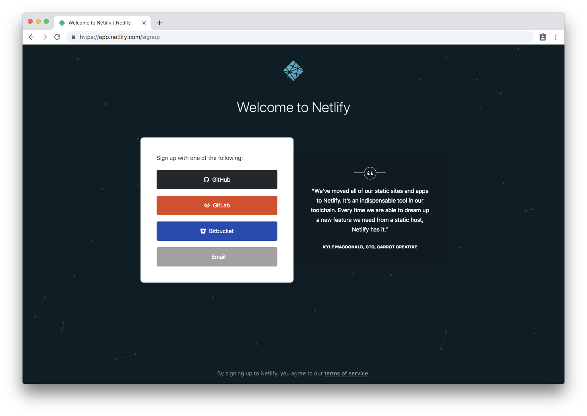
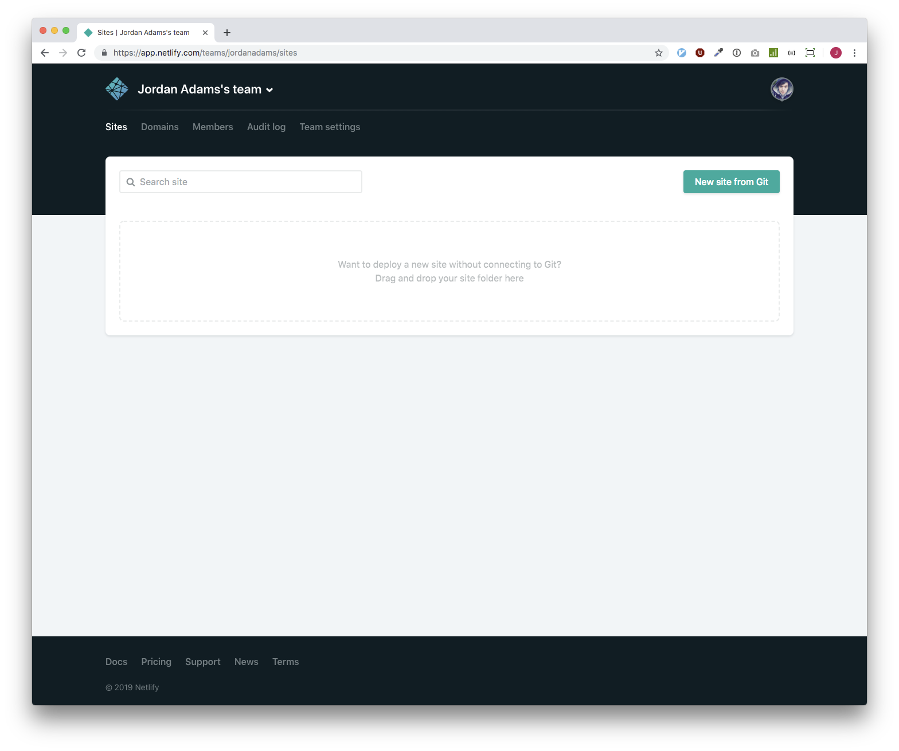
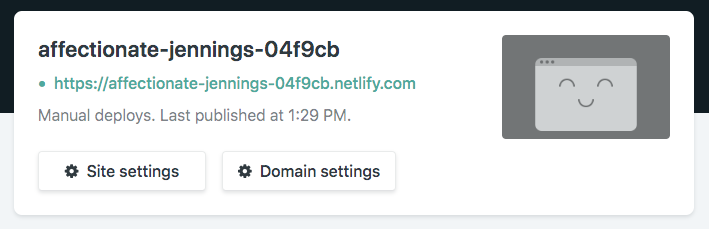
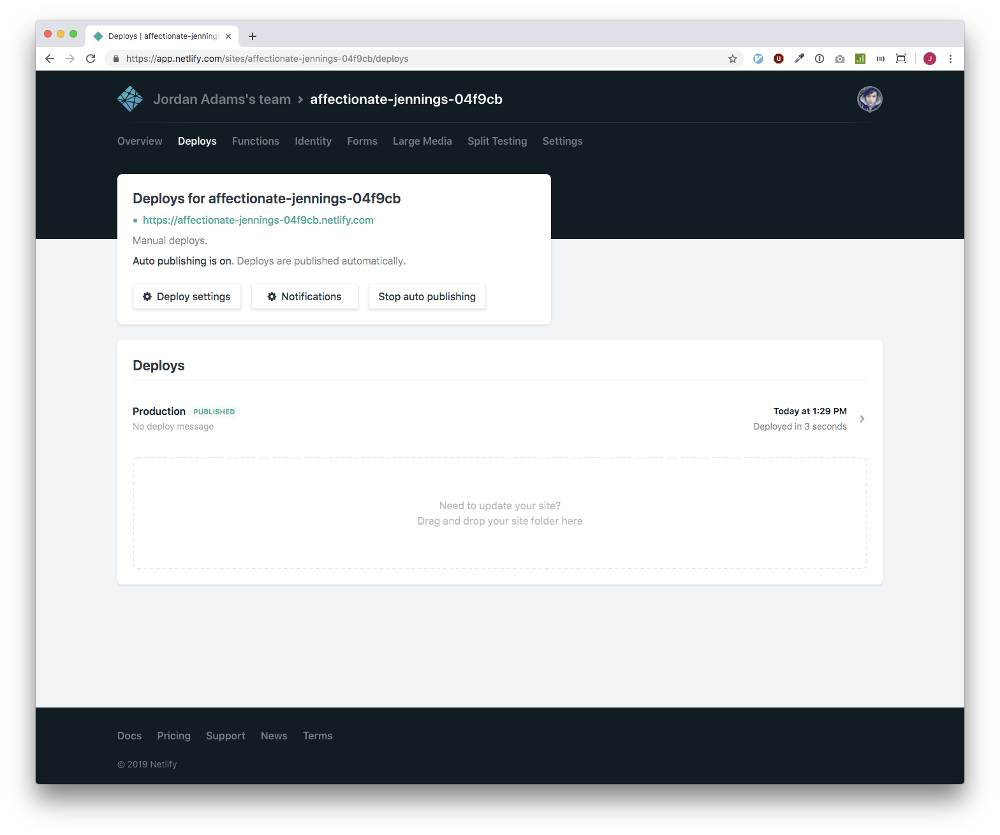

In this course you'll be learning how to create a website and deploying it to the web for the world to see.
This first part will cover getting you setup with Netlify and putting your first website live. Netlify is a free service which handles all of the hard work of hosting and deploying a website for you as well as offering some cool features like forms and authentication for free.
In part two we'll learn how to integrate GitHub with Netlify for automated deployments. GitHub is another free service which allows millions of developers and businesses to securely store and version their code.
To get started, download the template code from bit.ly/codeup-netlify and unzip it. Then open this in your favourite code editor (VS Code or Atom are good choices). You might want to have a look around but don’t worry if you don’t understand it just yet. Once you’re ready, let’s get it online.
Next you'll need a Netlify account so visit app.netlify.com/signup and sign up with your email address.
Finally, let’s get things online by creating a site in Netlify and uploading our code to it. To do this, open your file browser and find the folder you downloaded in step 1. Then head over to app.netlify.com and then drag-and-drop the folder into the dashed box.
It may take anywhere up to a few minutes for your deployment to finish but you’ll know it’s done when you’re given a green link. Once it’s finished, go ahead and click the link to see your deployed site.
To redeploy your code at any time, head back to Netlify click the “Deploys” tab, then drag-and-drop your code into the dashed box again.
Awesome! We’re all set up on Netlify and everything’s working. But right now our site is a little sparse and doesn’t really tell anyone who we are or what we do. So in the next part we’ll look at how we can personalise things a bit by making changes and uploading them to Netlify.
You might have noticed a “Next Step” link at the bottom of your site. Go ahead and click that to continue.